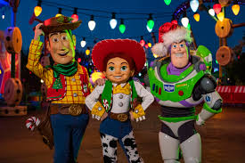

vestimenta icónica de personajes
| Ir a inicio |
| Ir a festivales |
| Ir a canciones |
| Ir a Platillos |
| Ir a Formulario |
Las princesas de Disney están de moda últimamente, de eso no hay ninguna duda. Y aunque apuesto ya conoces todo sobre tus preferidas, quizás te sorprenda saber que tras los personajes creados por Walt, existen historias y detalles realmente increíbles y los trajes son simplemente icónicos.
Los villanos son tan icónicos, tanto en personalidad, maldades y vestuario.
En mi caso uno de mis favoritos, los encantadores trajes de toy story, que siempre los recordaremos en nuestra memoria.
